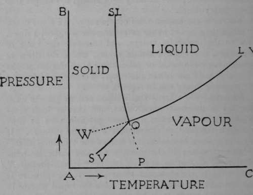
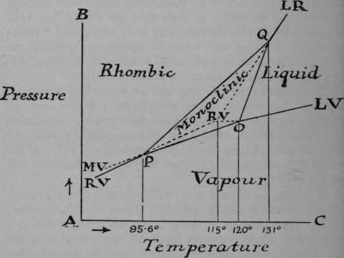

Phases Of Elements
Description
This section is from the book "Modern Chemistry", by William Ramsay. Also available from Amazon: Modern Chemistry: Theoretical and Modern Chemistry (Volume 2).
Phases Of Elements
We know that a liquid and its gas can exist together at different temperatures, and that at high temperatures the gas exerts a greater pressure than at low. To each temperature corresponds a definite pressure. If the temperature be named, it is termed the "boiling-point" at that pressure; if the pressure for any particular temperature be alluded to, it is called the " vapour-pressure." According to the molecular theory, the vapour-pressure is reached when as many molecules leave the liquid surface in unit time as return to it by the condensation of the gas. There is a state of equilibrium ; but on raising the temperature the equilibrium is disturbed, and more vapour is given off to restore it. The gaseous state and the liquid state are termed two phases of the same kind of matter, and they can coexist at various temperatures.
When the pressure is reduced below a certain amount —for water to 4.6 mms.—the boiling-point is lowered to o°. At this temperature water usually freezes under a pressure of one atmosphere. As the pressure is 4.6 mms., the freezing-point of the water will be at 0.0070 above zero ; for it is found that the freezing-point of water is lowered by that amount for each rise of one atmosphere pressure; and if the atmosphere pressure be removed, the freezing-point will be raised. At this temperature, therefore, ice, water, and water-vapour are all in equilibrium with each other and can coexist. The point is called the " triple point." The states of water, ice, and steam can be represented by a diagram.
Let pressures be measured up the vertical line AB, and temperatures along the horizontal line AC. The point O corresponds to the temperature 0.0070 and to the pressure 4.6 mms. Along the line OLV (LV standing for liquid-vapour) the liquid and the vapour can coexist ; it is usually termed the " vapour-pressure curve." The line O SL (solid-liquid) shows the alteration in the melting-point of ice as the pressure rises ; its slope is greatly exaggerated in order to make it visible. It shows that as the pressure is raised the melting-point of ice becomes lower and lower. Lastly, the line OSV (solid-vapour) indicates the coexistence of the solid and the vapour phases ; the pressure is below 4.6 mms., and the temperature below o°. The regions shown correspond to those conditions of temperature and pressure where the substance can exist as solid, as liquid, or as gas. The dotted line WO represents the condition of a super-cooled liquid. It is possible to cool water below o° ; for example, if it be pure and kept at rest, its vapour-pressure is then greater than that of ice at the same temperature. It has not been found possible to heat ice above its melting-point without its melting, but it is possible to cool steam somewhat below its condensing temperature without condensation occurring, as shown by the clotted line OP. These states of relative instability have been called " meta-stable." Shaking the water or introducing particles of dust into the steam at once induce freezing or condensation ; the water changes to ice or the steam condenses.
The condition of allotropy can be similarly represented. But the problem is more complicated; in the case of sulphur, for example, there are two solid phases, the rhombic and the monoclinic, besides more than one liquid phase. As the two solid phases, the rhombic melting at 115°, and the monoclinic melting at 120°, are well known, attention will be confined to them.
If sulphur be allowed to crystallise from fusion, it assumes the monoclinic form of long prisms. These crystals, however, change spontaneously at the ordinary temperature, and in a few hours fall into minute rhombic octahedra. At the temperature 95.6°, however, this change no longer takes place ; the two crystalline forms can coexist in presence of each other without one form turning into the other. The rhombic variety gives off vapour which of course exerts pressure at that temperature and at lower temperatures at which the rhombic variety is stable; and the vapour-pressure curvs is indicated by the line PRV (rhombic-vapour). This temperature is termed the "transition temperature" for rhombic and monoclinic sulphur and sulphur-vapour. It may be compared with the melting-point of ice under 4.6 mms. pressure, which, it will be remembered, is 0.0070, where water, ice, and steam are in equilibrium. But it differs inasmuch as it is possible to heat rhombic sulphur above the transition-point P without immediate change. PO is the vapour-pressure curve for monoclinic sulphur, which melts at 120°; and each of these curves must meet in the transition-point P, for at that temperature both modifications can coexist. Below 95.6 the monoclinic form is in the metastable condition, and the line PMV, which is a continuation of the line OP, expresses the vapour-pressure of the monoclinic variety below the transition temperature. The rhombic variety above 95.6° is in the metastable condition, and its vapour-pressure is shown by the line PRV, the upper portion of which is dotted. If the sulphur be compressed, the transition-point rises, and the line PQ typefies this. At 120° there must be another transition-point, for here rhombic sulphur, liquid sulphur, and sulphur-vapour may exist in presence of each other. Now the melting-point of sulphur is raised by pressure instead of being lowered, as in the case of water. This is the more usual; the lowering of melting-point of the solid water depends on the fact that the density of ice is less than that of water, but that of solid sulphur is greater than that of molten sulphur. Hence the rise of the transition-point along the line PQ. At O three curves meet: OP, representing the vapour-pressure of monoclinic sulphur; O LV, the vapour-pressure of liquid sulphur; and OQ, the effect of pressure in raising the melting-point of rhombic sulphur. The lines PQ and OQ happen to meet at Q, which is also a transition-point; it lies at 131 ° ; and here rhombic, monoclinic, and liquid sulphur can all coexist, though the pressure is too high for vapour to exist along with them. At higher temperatures and pressures monoclinic sulphur is incapable of existence. As we have seen, the metastable states of sulphur are capable of existence for some time. Rhombic sulphur can be heated to its melting-point, 115°, which lies above its transition temperature. At this temperature it and the liquid resulting from its fusion are both in a metastable condition. And the effects of pressure in raising the melting-point of rhombic sulphur is shown by the dotted line RVQ, which is continued in QLR (liquid-rhombic) at temperatures at which the monoclinic variety is no longer capable of existence.
Although the allotropy of other elements has not been so minutely studied as that of sulphur, it is certain that the various conditions can all be represented in a similar manner. For example, the transition-point of the grey and metallic modifications of tin is 20°; below that temperature metallic tin is in the metastable condition ; if cooled sufficiently, it may change spontaneously into the grey powder, but the change may not take place, just as water may be kept super-cooled without freezing. But just as the addition of a crystal of ice to super-cooled water causes it to crystallise, so the contact of grey tin below 20° with metallic tin induces the change ; the surface of the tin becomes covered with spots like pimples, and, if time be given, all the tin falls to powder. The change is the more rapid, up to a certain point, the lower the temperature. If the grey tin be raised in temperature above 20°, it is reconverted into metallic tin, the more quickly the higher the temperature.
The yellow waxy condition of ordinary phosphorus, too, appears to be a metastable condition, for if its temperature is raised under pressure, red phosphorus is produced. On the other hand, if red phosphorus be heated under ordinary pressure, it volatilises and condenses as yellow phosphorus. Nevertheless, at the very highest temperatures, the vapour-pressure curves would indicate that yellow phosphorus is the stable form.
We are still in the dark as to the precise reason of such allotropic changes. From cases which can be investigated, owing to the liquid or gaseous states of the allotropic modifications, the cause would appear to consist in a greater or less molecular complexity, but this is not proved for solids. It is possible that the cause of allotropy is to be found, in some cases at least, in a different arrangement of the molecules in the solid, and this suggestion falls in with the fact that allotropy often consists in different crystalline forms, but it is also conceivable that a different crystalline form may correspond with difference in molecular complexity as well as with different molecular arrangement. Until some method is discovered whereby the molecular weights of solids can be determined, it is not probable that certainty will be attained.
Continue to: